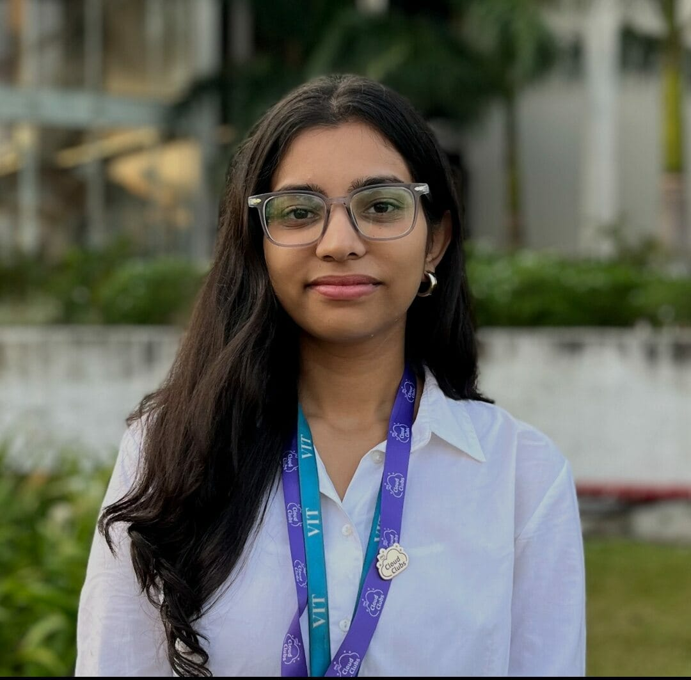

Pranjal Pandey

Summary
I would describe myself as an enthusiastic, curious, and highly dedicated individual. I firmly believe in giving my 100% to any task I undertake, regardless of the challenges. I am resilient, always ready to take the next step forward, and thrive in both individual and collaborative settings.
Education
- Completed my 10+2 from St. Xavier's School, Hazaribagh. (May,2022)
- 3rd year Btech Computer Science Student with AIML as specialisation at VIT Bhopal University.
Work Experience
I hold leadership roles as:-
- PR Lead of the Nature and Trekking Club (Feb 2025 - Present)
- Co-Lead of the PR and Outreach Team of the AWS Cloud Club (Oct 2024 - Present)
- Core Team Member of the Bashcraft Club (Oct 2024 - Present)
Skills
Technical Skills:
- C++(Basics)
- Python(Basics)
- Java(Basics)
- DSA in Java
- Web Development (Frontend,HTML,CSS)
Soft Skills:
- Effective Communication
- Leadership Qualities
- Logical Thinking
- Good management skills
Certifications
- Matlab course completion certificate
- Participation certificate of ML Hackathon at Techkriti (Technical fest of IIT Kanpur)
About Me
Contact Me